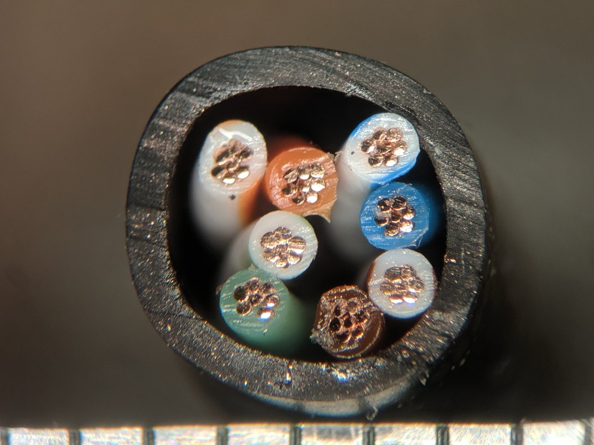
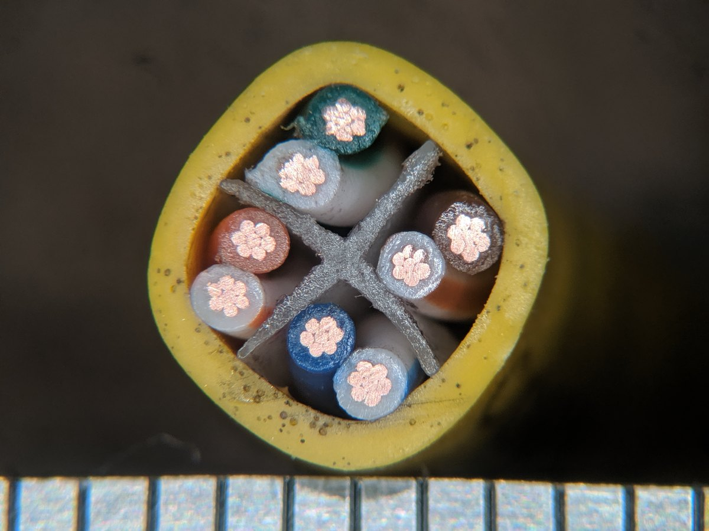

Switch A · L2 스위치
AP를 UTP로 연결하는 스위치입니다. 같은 네트워크 안의 장비를 연결해 데이터를 전달합니다.
0단계 첫 주제 · 1단계 · 개념 학습 · 약 20~25분
AP와 네트워크 장비가 UTP·광케이블·지빅을 통해 어떻게 연결되는지 설명할 수 있다.
이 페이지에서는 SFP/SFP+ 계열 광모듈을 편의상 지빅이라고 부릅니다. 제품 사양의 SFP·SFP+ 표기는 그대로 읽습니다.
처음 배우는 분을 위한 페이지입니다. 이름보다 “무엇과 무엇을 잇는가”를 먼저 보세요.
00 · 30초 핵심 요약
네트워크 통신은 IP 주소부터 시작하는 것이 아닙니다. 먼저 장비들이 UTP 또는 광케이블 같은 물리 매체로 실제 연결되어 있어야 합니다. 물리 매체는 데이터가 지나는 실제 통로입니다.
01 · 왜 필요한가
휴대폰은 무선으로 AP(Access Point)에 접속합니다. 하지만 AP가 상위 네트워크로 데이터를 전달하려면 그 뒤의 유선 연결도 필요합니다. AP 한 대의 선과 여러 AP가 함께 쓰는 상위 연결을 구분하면 어디가 끊겼을 때 어느 범위가 영향을 받는지 이해할 수 있습니다.
02 · 핵심 연결 구조
AP를 UTP로 연결하는 스위치입니다. 같은 네트워크 안의 장비를 연결해 데이터를 전달합니다.
Switch A와 광케이블로 연결된 상위 스위치입니다. 서로 다른 IP 네트워크 간에 데이터를 전달하는 라우팅을 담당합니다.
그림의 외형은 역할을 구분하기 위한 예시입니다. 실제 L2/L3 기능은 제품 사양과 장비 설정으로 확인합니다.
03 · UTP · 가장 먼저 만나는 케이블
UTP(Unshielded Twisted Pair)는 구리선 쌍을 꼬아 만든, 차폐층이 없는 케이블입니다. AP·PC와 스위치를 연결하는 대표적인 구리(Copper) 케이블로, 전기 신호로 데이터를 전달합니다.
작은 걸쇠가 있고 장비의 LAN 포트에 꽂습니다. 케이블 전체의 이름인 UTP와 끝부분의 연결 형태인 RJ45를 구분하세요.
Cat5e·Cat6는 케이블의 성능 등급입니다. UTP(U/UTP)는 금속 차폐막이 없는 구조를 뜻하며, Cat5e와 Cat6 모두 UTP 제품이 있습니다. 여기서는 일반적인 4쌍 UTP 케이블을 비교합니다.
대역폭과 전송속도는 다른 값입니다. MHz는 케이블이 신호를 전달하는 주파수 성능, Gbps는 초당 전송하는 데이터의 양을 나타냅니다. Cat6의 250 MHz가 Cat5e의 100 MHz보다 높아도 실제 통신이 자동으로 2.5배 빨라지지는 않습니다.
| 구분 | Cat5e | Cat6 |
|---|---|---|
| 외피 표기 | CAT5e / Category 5e 인쇄와 제품 품번으로 확인 | CAT6 / Category 6 색상·굵기만으로 확정하지 않음 |
| 규격 대역폭 | 100 MHz | 250 MHz |
| 1 Gbps | 최대 100 m | 최대 100 m |
| 2.5 Gbps | 최대 100 m 멀티기가 장비와 배선 조건 충족 시 | 최대 100 m 멀티기가 장비와 배선 조건 충족 시 |
| 5 Gbps | 조건부로 최대 100 m 해당 속도를 지원하는지 기존 배선의 주파수 성능·주변 간섭 확인 필요 | 최대 100 m 해당 속도의 배선·설치 조건 충족 시 |
| 10 Gbps | 일반적인 10G 배선 선택 기준으로 사용하지 않음 | 55 m 이내에서 조건부 검토 특히 37~55 m는 주변 케이블 간섭에 좌우됨. 짧아도 자동 보장되지 않음 |
| 내부 구조 | 8가닥 · 4쌍 두 가닥씩 꼬인 쌍이 모인 구조 | 8가닥 · 4쌍 쌍을 나누는 분리대가 있는 제품도 있음. 필수 구조는 아님 |
| 케이블 특징 | 일반적인 1G 연결과 조건에 맞는 멀티기가 연결에 사용. 도체 굵기·유연성은 제품마다 다름 | 더 높은 주파수와 엄격한 쌍 사이 간섭 성능 기준을 만족. 항상 더 굵거나 뻣뻣한 것은 아님 |
| 실제 사용 장소 예 | 학교·의료기관의 업무 공간 학교 네트워크 개선과 의료기관의 전화·데이터 통신 증설에 사용된 공개 사례 | 관공서·기업 사무실·물류시설 경찰 부서 업무 공간과 기업 사무실·창고 배선에 사용된 공개 사례 |
표는 이더넷 링크 속도 기준이며 파일 다운로드 속도를 보장하는 값은 아닙니다. 양쪽 포트가 해당 속도를 지원해야 하고, 케이블·플러그·잭·패치패널을 포함한 전체 연결 경로가 조건을 만족해야 합니다. 기존 배선을 더 높은 속도로 사용할 때는 배선 성능을 확인합니다.
장소는 사용 예시이지, 케이블을 구분하는 기준은 아닙니다. 같은 종류의 시설에서도 Cat5e와 Cat6를 사용할 수 있습니다. 필요한 통신 속도·연결 거리·장비와 전체 배선의 조건을 함께 보고 판단하세요.
아래는 제조사·시공사가 공개한 해외 구축 사례입니다. 각 자료에 기록된 시점의 사례이며, 국내 시설의 공통 기준이나 해당 시설의 현재 배선 상태를 뜻하지 않습니다.
관공서 · 경찰 부서 업무 공간
수사 인력과 증거 보관 공간을 위한 건물을 개보수하며, 업무 공간의 연결 지점과 통신실 사이에 Cat6 배선을 구축했습니다. 약 170개 연결 지점이 소개되어 있습니다.
학교 · 교육구 네트워크
학교 네트워크를 Cat5e 기반의 통합 배선으로 개선한 사례입니다. Cat5e도 학교와 같은 기관의 네트워크에 사용되었다는 점을 보여줍니다.
의료기관 · 본부 업무 공간
전화·데이터 통신 증설에 Cat5e와 Cat6 케이블, 접속부, 패치패널을 함께 사용했습니다. 같은 시설에서도 두 등급을 함께 쓸 수 있습니다.
기업 사무실 · 물류시설
사무실·창고에는 Cat6 연결 지점 4,644개를 설치하고, 주요 통신실 사이에는 광케이블을 구축했습니다. 같은 사업장도 연결 구간에 따라 매체를 달리 쓴 사례입니다.
출처 확인: . 공개 자료의 케이블 등급과 사용 구간만 요약했습니다. 공개되지 않은 링크 속도·장비 모델·국내 설치 현황을 추정하지 않았습니다. 사례별 근거와 확인 범위
막대 길이는 속도가 아니라 연결 거리입니다. 모든 행은 같은 0~100 m 눈금을 사용합니다. 장비와 배선 조건을 만족할 때의 기준입니다.
사선 막대는 별도 확인이 필요한 범위입니다. 37~55 m는 특히 주변 간섭의 영향을 받으며, 37 m 미만도 실제 배선 성능 확인이 필요합니다.
현장에서 이렇게 적용하세요. 1G 포트에 Cat6를 연결해도 링크가 10G로 바뀌지는 않습니다. AP에 PoE로 전원을 공급하는 것도 Cat6만의 기능은 아닙니다. 필요한 링크 속도와 PoE 전력, 케이블 제품 사양을 각각 확인하세요.
10G를 100 m까지 새로 구성한다면 Cat6A를 검토합니다. Cat6A는 500 MHz 등급으로, Cat6와 구분되는 규격입니다.
내부 구조의 제조사별 예시는 바로 아래 그림과 출처에서 확인할 수 있습니다. 이 비교는 우리 사업장에 설치된 케이블 등급을 확인한 결과가 아닙니다.
일반적인 4쌍 UTP는 둘 다 8가닥이 4쌍으로 꼬인 구조입니다. 눈에 띄는 차이 중 하나는 가운데 플라스틱 분리대입니다. 일부 Cat6에는 +자·X자 모양의 분리대가 있어 네 쌍의 간격과 위치를 유지하고 쌍 사이 신호 간섭을 줄입니다.
분리대 없이 모인 4쌍
분리대가 없는 케이블의 내부를 단순화한 모습입니다.
십자형 분리대가 있는 4쌍
가운데 분리대가 선 쌍 사이를 나눕니다. 모든 Cat6가 이 구조는 아닙니다.
위 그림과 아래의 실제 절단면 사진을 비교해 보세요. 케이블을 가로로 잘라 끝에서 본 모습입니다. 먼저 바깥 겉피복 → 안쪽 8가닥 → 가운데 분리대 순서로 살펴보세요.

원본 크게 보기 ↗이 샘플에는 중앙 분리대가 없습니다.
검은 겉피복 안에 절연된 심선 8가닥이 모여 있습니다. 각 심선의 끝에는 구리가 보입니다.
사진: TubeTimeUS · Wikimedia Commons 원본 설명
CC BY-SA 4.0 · 표시용 사진은 크기 축소·JPEG 재압축

원본 크게 보기 ↗가운데 회색 X자 부분이 분리대입니다.
네 쌍 사이를 나누는 모습을 볼 수 있습니다. 위의 십자형 그림과 비교해 보세요.
사진: TubeTimeUS · Wikimedia Commons 원본 설명
CC BY-SA 4.0 · 표시용 사진은 크기 축소·JPEG 재압축
작은 구리점이 여러 개 보이는 이유 · 이 사진의 케이블은 한 심선 안에 가는 구리선 여러 개를 묶은 구조입니다. 구리점 하나하나를 별도의 심선으로 세지 않습니다. 꼬여 이어지는 모습은 아래의 겉피복을 벗긴 4쌍 사진에서 확인하세요.
사진은 학습용 패치 케이블 샘플이며 우리 사업장 케이블이 아닙니다. 두 사진은 같은 배율의 굵기 비교가 아닙니다. 검정·노랑은 이 샘플의 겉피복 색이며 등급을 정하는 기준이 아닙니다. 분리대가 없는 Cat6도 있으므로 단면만으로 등급을 확정하지 마세요.
두 사진은 TubeTimeUS가 2019년 4월 30일 촬영하고 Wikimedia Commons에 공개한 실제 사진입니다. 표시용 사본은 크기와 JPEG 압축만 조정했고, 잘라내기·색상 보정·합성은 하지 않았습니다. 사진을 누르면 보존한 고해상도 원본이 열립니다. 사진의 이용 조건은 CC BY-SA 4.0입니다.
참고한 비교 글: IT KEVIN · 랜 케이블 CAT5e·CAT6 차이점. 블로그 사진을 재게시하지 않았으며, 위 실제 사진의 출처는 각 사진 아래에 별도로 표시했습니다. 성능·구조 판단은 본문의 공식 자료와 제품별 조건을 따릅니다.
분리대가 없는 Cat6도 있습니다. 제조사 Leviton의 310-UTP6P-MLB는 중앙 분리대 없이 Cat6 성능을 만족하는 제품입니다. 따라서 ‘분리대 있음 = Cat6, 없음 = Cat5e’로 확정할 수 없습니다.
| 관찰하는 부분 | 판단할 때 주의할 점 |
|---|---|
| 중앙 분리대 | 유무·모양은 볼 수 있습니다. 그러나 Cat6도 십자형, 테이프형, 중앙 분리대 없는 제품이 있어 등급의 확정 기준은 아닙니다. |
| 심선 굵기 | Cat5e 24 AWG·Cat6 23 AWG 제품 예시가 있지만, Cat6에도 24 AWG 제품이 있습니다. AWG는 도체 굵기 표기이며 숫자가 작을수록 굵습니다. 겉에서 보이는 심선 두께에는 절연 피복도 포함됩니다. |
| 꼬임·색상쌍 | 두 종류 모두 4쌍이며 같은 계열의 색상쌍을 사용합니다. 꼬임의 촘촘함이나 색상만으로 Cat5e·Cat6를 확정하지 않습니다. |
구조 관찰과 등급 확인은 구분하세요. 외피 인쇄가 불명확하면 제품 품번·제조사 사양·납품 또는 시공 기록을 대조하고, 확인되지 않으면 미확인으로 둡니다. 내부 관찰은 교체 후 분리한 케이블이나 여분 샘플로 하고, 등급을 알아보려고 운영 중인 케이블의 피복을 벗기지는 않습니다.
케이블을 교체하거나 끝부분을 다시 연결할 때는 안쪽 구조도 알아두면 도움이 됩니다. 사진에서 바깥 피복과 그 안의 가느다란 선을 구분해 보세요.

2가닥씩 × 4쌍 = 8가닥
쌍은 색으로 구분합니다. 주황·초록·파랑·갈색 선이 각각 같은 색 줄무늬가 있는 흰색 선과 짝을 이룹니다. 눈에 보이는 색 부분은 구리 자체가 아니라 심선의 절연 피복입니다.
1~8번은 RJ45 플러그의 핀 번호입니다. 아래는 T568B라는 결선 규격으로 연결한 예입니다. 케이블 안에서 선이 1~8번 순서로 나란히 있는 것이 아니라, 두 가닥씩 꼬인 네 쌍이 플러그의 정해진 핀으로 이어집니다.
같은 쌍: 1·2 / 3·6 / 4·5 / 7·8
초록쌍은 한 쌍이지만, 플러그에서는 3번과 6번으로 떨어져 보입니다.
금속 접점이 보이는 면을 바라봅니다.
잠금 걸쇠는 뒤쪽, 케이블은 아래쪽입니다.
‘흰색/주황’은 흰 바탕에 주황 줄무늬가 있는 선입니다. 그림의 번호는 이 T568B 예에서 연결되는 핀을 뜻하며, 심선 색에 고정된 번호는 아닙니다. T568A는 주황쌍과 초록쌍의 위치가 달라지므로 실제 교체·작업 전에는 기존 결선 규격을 확인하세요.
자료: Blake UK · RJ45 핀 방향과 T568B 색상표 · Fluke Networks · T568A/B의 쌍 구분
왜 꼬아 놓을까요? 선 사이의 신호 간섭을 줄이기 위한 구조입니다. 따라서 끝부분을 다시 연결할 때도 꼬임을 필요 이상으로 많이 풀지 않는 것이 중요합니다.
PoE(Power over Ethernet)를 지원하는 환경에서는 스위치가 같은 구리 케이블로 AP에 전원도 보낼 수 있습니다. PoE는 케이블만 바꾸면 자동으로 생기는 기능이 아닙니다. 전원을 주는 장비와 받는 AP가 이를 지원해야 합니다.
우리 담당 구간도 케이블 등급이 명확히 확인되지 않았다면 Cat5e·Cat6로 단정하지 않습니다. 다른 파트의 사용 현황은 정확히 알지 못하므로, 담당 구간의 관찰을 사업장 전체에 일반화하지 않습니다.
Cat5e는 과거에만 사용하던 케이블이 아닙니다. Cat5e = 오래된 케이블 = 장애라고 단순하게 판단해서는 안 됩니다.
케이블 이름에서 단정하지 않고 상태를 함께 본다는 사고 순서입니다. 상세 장애 조치 절차는 다루지 않습니다.
04 · 광케이블
Fiber(광케이블)는 빛을 이용해 데이터를 전달하는 매체입니다. UTP와 물리적으로 다른 통로이며, 스위치 사이의 연결에 자주 사용됩니다.
큰 구분으로 Multimode(멀티모드)와 Single-mode(싱글모드)가 있습니다. 빛이 전달되는 방식이 다르며, 사용할 광모듈과 맞아야 합니다. 지금은 두 종류가 있다는 점과 서로 맞춰 사용한다는 점만 기억하세요.
네. 다만 선의 겉피복 색상과 끝부분 커넥터의 색상은 구분해서 봐야 합니다. 아래는 장비와 패널을 잇는 광 패치코드(양 끝에 연결부가 달린 광케이블)의 대표적인 겉피복 색상입니다.
| 겉피복 색상 | 흔히 나타내는 광섬유 종류 |
|---|---|
| 노랑 | 싱글모드 OS1 · OS2 |
| 주황 | 멀티모드 OM1 · OM2 |
| 아쿠아(청록) | 멀티모드 OM3 · OM4 |
| 보라 | 멀티모드 OM4에 쓰이기도 함 |
| 연두(Lime Green) | 멀티모드 OM5 |
OS는 싱글모드, OM은 멀티모드의 분류 표기입니다. 지금은 세부 규격을 외우기보다 케이블 겉면의 표기를 찾아보는 데 활용하세요. 위 색상 견본은 이해를 돕기 위한 예시입니다.
색상은 첫 단서이고, 규격 표기로 확인합니다. 주황색만으로 OM1과 OM2를, 아쿠아색만으로 OM3과 OM4를 구분할 수 없습니다. OM4는 보라색뿐 아니라 아쿠아색 제품도 있습니다.
제조사·현장 규칙에 따라 다른 색상을 쓰기도 하며, 옥외 케이블은 검정색인 경우가 많습니다. 교체할 때는 겉피복의 OS2·OM3·OM4 같은 인쇄, 제품 라벨, 연결할 광모듈의 지원 규격을 함께 확인하세요.
LC는 장비에 꽂는 커넥터의 형태입니다. 우리 담당 구간에서는 LC 타입을 사용합니다. 다만 LC라는 이름이나 모양만으로 싱글모드·멀티모드를 구분할 수는 없습니다. 교체할 때는 케이블 표기와 지빅·패널의 지원 규격을 함께 확인하세요.
참고로 케이블 내부의 여러 광섬유에 칠해진 색은 각 가닥을 식별하는 표시입니다. 위의 겉피복 색상표와는 다른 기준입니다.
건물의 광 배선은 이런 연결 지점을 거쳐 이어질 수 있습니다. 그림 속 FDF는 데이터의 목적지를 판단하는 스위치가 아닙니다.
05 · 지빅 · SFP/SFP+ 광모듈
이 페이지에서 지빅은 SFP/SFP+ 계열의 광 송수신 모듈을 편의상 부르는 말입니다. 스위치와 광케이블 사이에서 빛을 보내고 받으며, 케이블이나 스위치 전체를 뜻하지 않습니다. 정식 GBIC 모듈과 SFP는 서로 다른 규격입니다.
모든 지빅이 같은 것은 아닙니다. 장비·속도·사용할 광 방식에 맞는 제품이 필요합니다. Ethernet에서 흔한 예로 1G에는 SFP, 10G에는 SFP+를 접하지만, SFP/SFP+라는 이름 자체가 싱글·멀티를 구분해 주지는 않습니다.
MMF(Multimode Fiber)를 쓰는 제품은 멀티지빅, SMF(Single-mode Fiber)를 쓰는 제품은 싱글지빅이라고 부릅니다. 여기서 ‘싱글’은 광케이블이 한 가닥이라는 뜻이 아닙니다.
HPE Aruba 공식 제품 사양을 학습용으로 정리한 예시입니다. 실제 라벨의 배치나 우리 사업장의 설치 제품을 보여주는 자료는 아닙니다.
멀티지빅 예시
10G · SFP+ · LC · SR
850 nm · MMF
멀티모드 광케이블용
OM3에서 최대 300m
OM4에서 최대 400m
싱글지빅 예시
10G · SFP+ · LC · LR
1310 nm · SMF
싱글모드 광케이블용
제조사 지정 SMF에서 최대 10km
| 표기 | 읽는 방법 |
|---|---|
| 10G / SFP+ | 10G는 Ethernet 속도, SFP+는 모듈 규격입니다. 둘 다 싱글·멀티 구분 표기는 아닙니다. |
| SR / LR | 위 10G 예시의 10GBASE-SR은 멀티모드용, 10GBASE-LR은 싱글모드용입니다. 모델명의 일부만 보지 말고 전체 광규격을 확인합니다. |
| MMF / SMF | MMF는 멀티모드, SMF는 싱글모드 광섬유를 뜻합니다. 종류를 구분할 때 우선 확인할 항목입니다. |
| 850 nm / 1310 nm | 사용하는 빛의 파장입니다. nm는 나노미터라는 단위이며, 속도나 전송 거리를 뜻하지 않습니다. |
| 300m / 10km | 지정된 광케이블과 조건에서의 전송 거리입니다. 거리 숫자만 같아도 호환되는 것은 아니며, 실제 배선 상태도 조건을 만족해야 합니다. |
| LC | 광 커넥터의 형태입니다. 위 두 제품 모두 LC를 사용하므로 LC라는 글자나 구멍 모양만으로 싱글·멀티를 구분할 수 없습니다. |
파장·색상 하나로 확정하지 마세요. 1310 nm를 쓰면서 멀티모드도 지원하는 LRM 제품이 있습니다. 지빅의 걸쇠 색이나 광케이블 색도 보조 단서로만 보고, 정확한 모델의 MMF/SMF 사양을 확인합니다.
대표적인 1000BASE-SX는 850 nm의 멀티모드용입니다. 1000BASE-LX/LH는 1310 nm로 싱글모드에 사용하며, 일부 제품은 지정 조건에서 멀티모드도 지원합니다. 따라서 ‘LX라는 글자가 있으면 무조건 싱글 전용’이라고 외우지 말고 해당 모델의 사양표를 확인하세요.
교체 전에는 양쪽 지빅의 광규격, 광케이블 종류, 커넥터 사양과 스위치의 지원 모델·소프트웨어 조건까지 확인합니다. 지빅이 포트에 꽂힌다는 것만으로 동작을 보장하지는 않습니다.
일반적인 두 가닥 광 연결은 맞춰야 합니다. Tx(Transmit)는 보내는 곳, Rx(Receive)는 받는 곳입니다. 한쪽의 Tx가 반대쪽의 Rx로 이어져야 하며, 이 송수신 연결 방향을 극성(Polarity)이라고 합니다.
중간에 FDF나 여러 패치케이블이 있어도 양끝 지빅 사이의 이 관계가 유지되어야 합니다. 싱글모드·멀티모드와 가닥 수는 별개입니다. 앞의 SR 멀티지빅과 LR 싱글지빅 예시는 모두 두 가닥을 사용합니다.
지빅의 장착 방향이 반대라면 정상일 수 있습니다. 포트에 따라 지빅이 180° 뒤집혀 장착되는 장비가 있습니다. 이때 정면에서 보이는 Tx·Rx의 좌우 위치도 바뀝니다. 송신·수신 기능이 서로 바뀌는 것이 아니라, 그 기능을 가진 구멍의 위치가 뒤집히는 것입니다.
그림의 기준 · 각 스위치를 정면에서 바라본 모습입니다. A의 1번과 B의 1번은 왼쪽 Tx·오른쪽 Rx, B의 2번은 그 반대라고 가정합니다. 빨강 R과 파랑 B는 각각 같은 광섬유가 양끝까지 이어진다는 설명용 표식이며, 다른 호환 조건은 맞는 것으로 봅니다.
A 1번 ↔ B 1번 · 같은 장착 방향
Switch A · 1번 포트기준 방향 장착
Switch B · 1번 포트기준 방향 장착
빨강–파랑 ↔ 파랑–빨강송수신 연결 조건 충족
A 1번 ↔ B 2번 · 반대 장착 방향
Switch A · 1번 포트기준 방향 장착
Switch B · 2번 포트180° 반대 장착
빨강–파랑 ↔ 빨강–파랑송수신 연결 조건 충족
같은 색 순서로 보인다는 이유만으로 케이블을 뒤집지 마세요. 확인할 것은 ‘양끝 색이 반대인가?’가 아니라 ‘A Tx가 B Rx로, B Tx가 A Rx로 이어지는가?’입니다. 그림의 180° 표시는 포트 설계에 따른 장착 차이를 설명하며, 지빅을 임의로 뒤집어 삽입하라는 뜻이 아닙니다.
근거: Cisco · 포트 열에 따른 반대 장착, Fluke Networks · 끝에서 끝까지 Tx→Rx. 색 표식 그림은 이 두 원리를 조합한 학습용 설명입니다.
빛이 나오는지 눈으로 확인하지 마세요. 광 포트나 케이블 끝을 들여다보지 않습니다. 송신 여부 확인에는 적절한 광 검출기 등 측정 도구를 사용합니다.
| 연결 방식 | 확인할 내용 |
|---|---|
| 일반적인 두 가닥 광 연결 | 양쪽 Tx → Rx를 맞춥니다. Tx끼리, Rx끼리 이어지면 정상적인 송수신 경로가 만들어지지 않습니다. |
| 두 커넥터가 묶인 듀플렉스 패치코드 | 전체 경로에 맞는 극성으로 구성되어 있다면 두 커넥터를 분리하지 않고 연결합니다. 묶여 있다는 이유만으로 항상 맞는 것은 아니며, Tx/Rx를 자동으로 바꿔 주는 것도 아닙니다. |
| 한 가닥용 BiDi / BX 지빅 | 한 가닥에서 서로 다른 파장으로 송수신하므로 두 심선의 위치를 나눠 맞추지 않습니다. 대신 양끝에 제조사가 지정한 짝을 사용하고, 한쪽 Tx 파장과 반대쪽 Rx 파장을 맞춥니다. |
Cisco 1000BASE-BX10의 예입니다. 아래 U와 D가 한 쌍이며, 같은 D 두 개를 연결하는 방식이 아닙니다.
| 제품 | Tx · 보냄 | Rx · 받음 |
|---|---|---|
| BX10-U | 1310 nm | 1490 nm |
| BX10-D | 1490 nm | 1310 nm |
이 예는 싱글모드 한 가닥을 사용합니다. 다른 BiDi 제품에 이 파장이나 U/D 표기를 그대로 적용하지 말고, 정확한 모델의 짝·속도·거리·광섬유 종류·장비 지원 조건을 확인합니다.
우리 담당 파트에 어떤 방식이 설치되어 있는지는 실제 지빅의 모델과 배선을 확인해야 합니다. 위 설명은 연결 원리를 배우기 위한 일반적인 예시입니다.
지빅만 꽂혀 있어도 케이블이 빠져 있으면 이 광 연결은 완성되지 않습니다. 반대로 상위 연결이 끊겼다고 스위치 자체의 전원까지 꺼지는 것은 아닙니다.
06 · 현장에서 케이블 선택과 장애 판단
연결이 안 될 때는 규격이 서로 맞지 않는 문제와 송수신 방향이 잘못된 문제를 나눠 확인합니다. 아래는 현장 판단을 위한 일반적인 예시이며, 우리 담당 파트의 실제 설치 모델이나 배선을 확인한 결과는 아닙니다.
대상 포트·상대 장비·영향받는 서비스를 확인하고, 기존 연결과 라벨을 기록합니다. 분리·교체는 현장 작업 절차에 따라 진행하며, 한 번에 한 요소를 바꿔 결과를 확인합니다.
| 양끝 지빅 예시 | 선택할 케이블과 조건 |
|---|---|
| J9150D ↔ J9150D 10G SR · MMF | OM3 또는 OM4 멀티모드, 50/125µm, 지빅 쪽 LC 2심이 대표 선택입니다. 전체 광 경로가 OM3이면 최대 300m, OM4이면 최대 400m라는 제조사 조건을 확인합니다. |
| J9151E ↔ J9151E 10G LR · SMF | 제조사 지정 9/125µm 싱글모드, 지빅 쪽 LC 2심을 사용합니다. 최대 10km라는 표기는 배선 상태와 광 손실 등 제조사 조건을 만족할 때의 값입니다. |
µm는 광섬유 크기의 단위입니다. 위 제품 조합은 예시이며, 양끝이 반드시 같은 제조사·품번이어야 한다는 뜻은 아닙니다. 서로의 광규격과 각 장비의 지원 조건이 맞아야 합니다.
FDF 쪽 커넥터도 별도로 확인하세요. 지빅 쪽이 LC여도 FDF 쪽은 SC 등 다른 형태일 수 있습니다. 이때는 양쪽 연결부에 맞는 패치코드를 사용합니다. 커넥터 모양이 다른 것과 싱글·멀티 광섬유를 섞는 것은 다른 문제입니다.
AOS-S 16.11 공식 문서 기준의 조회 명령입니다. AOS-CX나 다른 제조사에는 그대로 적용하지 않습니다.
show interfaces transceiver
show interfaces transceiver <포트> detail<포트>는 실제 대상 포트 번호로 바꿉니다. Model·Type·Wavelength·Transfer Distance에서 모델, 광규격, 파장, 지원 매체와 거리를 확인합니다.
Transfer Distance는 지빅의 지원 사양이며 실제 케이블 길이의 측정값이 아닙니다. 이 조회만으로 현재 연결된 케이블의 OM/OS 등급을 자동 판별할 수는 없습니다. 표시 항목은 장비·소프트웨어·지빅에 따라 달라집니다.
광 포트·광섬유 끝을 눈으로 들여다보지 않습니다. 불빛이 보이지 않아도 송신 중일 수 있습니다. 검사·청소는 광원 차단과 제조사의 안전 절차를 따릅니다.
사례 A · 지빅 규격 불일치
10G SR · 850nm · MMF↔10G LR · 1310nm · SMF
예를 들어 양쪽이 SR인데 중간에 싱글모드 패치코드를 넣으면 매체 조건이 맞지 않습니다. 연결 실패·불안정·오류 증가가 생길 수 있으므로, 장비 앞 패치코드와 FDF 사이의 고정 배선을 함께 확인해 지정된 매체로 맞춥니다.
일부 LX/LH·LRM에는 제조사가 허용한 매체 조합과 조건이 있습니다. 이 예외를 일반적인 SR↔LR 연결이나 임의의 싱글·멀티 혼용에 적용하지 않습니다.
사례 B · 일반 2심 광의 극성 오류
잘못된 연결A Tx — B Tx
A Rx — B Rx
맞는 연결A Tx → B Rx
B Tx → A Rx
양끝을 동시에 뒤집으면 기존의 잘못된 대응 관계가 남습니다. 분리·극성 전환을 지원하지 않는 커넥터를 억지로 뜯지 않습니다. 이 조치는 일반 2심 광에 관한 설명이며 한 가닥용 BiDi에는 적용하지 않습니다.
여전히 안 된다면 무작정 계속 교차하지 않습니다. 양쪽 포트의 활성 상태, 지빅 규격, 단선·오염·꺾임·전체 거리부터 다시 확인합니다. 낮은 Rx 값은 여러 원인에서 생기며, DOM 미지원·값 없음도 곧바로 단선을 뜻하지 않습니다.
07 · 헷갈리기 쉬운 비교
| 항목 | 초급 핵심 개념 |
|---|---|
| UTP | AP·PC와 스위치 등을 연결하는 구리 케이블 |
| Fiber | 빛을 이용해 장비 사이에서 데이터를 전달하는 광케이블 |
| 지빅 (SFP/SFP+) | 스위치와 광케이블 사이의 광 송수신 모듈 |
| FDF | 광케이블을 정리하고 연결하는 중간 지점 |
08 · 꼭 기억하기
09 · 내 말로 설명하기
AP A에서 Switch B까지 실제로 어떤 케이블과 장비를 거쳐 연결되는지 자신의 말로 설명해보세요.
2단계 · 실습
예상 → 조작 → 관찰 → 설명으로 같은 연결 구조를 확인합니다.
명칭 기준 · 개념 학습과 실습 모두 AP A·AP B, Switch A·Switch B를 같은 이름으로 사용합니다. 이 페이지의 지빅 A·B는 실습의 SFP A·B와 같은 모듈이며, 각각 Switch A·B 쪽에 있습니다. FDF A는 중간 광 연결 지점입니다. 이 개념 그림에서 Switch A는 L2, Switch B는 L3 역할이며, 특정 현장의 기종이나 설정을 확정한 것은 아닙니다.
공식 표준·제조사 문서를 근거로 만든 초급 설명입니다. 대표 배선과 영향 범위는 학습용 단순화이며 특정 환경을 측정한 결과가 아닙니다. 이번 주제는 공식 문서 검토와 브라우저 학습 모델 검증만 수행했으며 실물·PNETLab 검증은 수행하지 않았습니다.